Klasifikasi#
Import Library#
# ==============================
# IMPORT LIBRARIES
# ==============================
import os
import warnings
import urllib.request
import pandas as pd
import numpy as np
import matplotlib.pyplot as plt
import seaborn as sns
from sklearn.preprocessing import StandardScaler, LabelEncoder
from sklearn.model_selection import train_test_split
from sklearn.naive_bayes import GaussianNB
from sklearn.ensemble import RandomForestClassifier
from sklearn.metrics import accuracy_score, classification_report, confusion_matrix
from imblearn.over_sampling import SMOTE
import mysql.connector
# Supress warnings supaya output lebih bersih
warnings.filterwarnings('ignore')
print("Semua library berhasil diimpor!")
Semua library berhasil diimpor!
Load Dataset#
import pandas as pd
import mysql.connector
print("=== MEMUAT DATASET E.COLI ===")
# Fungsi untuk load data dari MySQL
def load_mysql():
try:
conn_params = {
'user': 'root', 'password': '', 'host': 'localhost',
'database': 'ecoli', 'port': 3306
}
conn = mysql.connector.connect(**conn_params)
df_local = pd.read_sql("SELECT * FROM ecoli", conn)
conn.close()
print("Data berhasil dimuat dari MySQL")
return df_local
except Exception as e:
print("Gagal memuat dari MySQL:", e)
return None
# Coba load dari MySQL
df = load_mysql()
# Jika MySQL gagal, ambil dari UCI repository
if df is None:
url = "https://archive.ics.uci.edu/ml/machine-learning-databases/ecoli/ecoli.data"
cols = ['protein_name', 'mcg', 'gvh', 'lip', 'chg', 'aac', 'alm1', 'alm2', 'location_class']
df = pd.read_csv(url, delimiter='\s+', names=cols)
print("Data berhasil dimuat dari UCI repository")
# Info awal dataset
print(f"\nShape dataset: {df.shape}")
print(f"Kelas target: {df['location_class'].unique()}")
print("\n5 baris pertama:\n", df.head())
=== MEMUAT DATASET E.COLI ===
Gagal memuat dari MySQL: 2003 (HY000): Can't connect to MySQL server on 'localhost:3306' (111)
Data berhasil dimuat dari UCI repository
Shape dataset: (336, 9)
Kelas target: ['cp' 'im' 'imS' 'imL' 'imU' 'om' 'omL' 'pp']
5 baris pertama:
protein_name mcg gvh lip chg aac alm1 alm2 location_class
0 AAT_ECOLI 0.49 0.29 0.48 0.5 0.56 0.24 0.35 cp
1 ACEA_ECOLI 0.07 0.40 0.48 0.5 0.54 0.35 0.44 cp
2 ACEK_ECOLI 0.56 0.40 0.48 0.5 0.49 0.37 0.46 cp
3 ACKA_ECOLI 0.59 0.49 0.48 0.5 0.52 0.45 0.36 cp
4 ADI_ECOLI 0.23 0.32 0.48 0.5 0.55 0.25 0.35 cp
Prepocesing#
# ==================================================
# PREPROCESSING
# ==================================================
from sklearn.preprocessing import StandardScaler, LabelEncoder
print("=== MEMULAI PREPROCESSING DATA ===")
print()
# Pisahkan fitur dan target
X_df = df.drop(columns=['protein_name', 'location_class']) # semua kolom kecuali target
y = df['location_class']
# Encode target ke bentuk numerik
le = LabelEncoder()
y_enc = le.fit_transform(y)
print(f"Label unik: {le.classes_}")
print(f"Label encoded: {np.unique(y_enc)}")
print()
# Pastikan semua fitur berupa string jika ada list/array, lalu one-hot encode
X_df = X_df.applymap(lambda x: str(x) if isinstance(x, (list, np.ndarray)) else x)
X_encoded = pd.get_dummies(X_df, drop_first=True)
print(f"Shape fitur setelah one-hot encoding: {X_encoded.shape}")
print()
# Scaling fitur numerik
scaler = StandardScaler()
X_scaled = scaler.fit_transform(X_encoded)
print("Preprocessing selesai. Contoh 5 baris pertama fitur setelah scaling:")
print(X_scaled[:5])
=== MEMULAI PREPROCESSING DATA ===
Label unik: ['cp' 'im' 'imL' 'imS' 'imU' 'om' 'omL' 'pp']
Label encoded: [0 1 2 3 4 5 6 7]
Shape fitur setelah one-hot encoding: (336, 7)
Preprocessing selesai. Contoh 5 baris pertama fitur setelah scaling:
[[-0.0517614 -1.41953086 -0.17514236 -0.05463584 0.49078096 -1.20771743
-0.7160837 ]
[-2.21287637 -0.67596708 -0.17514236 -0.05463584 0.32710612 -0.69711074
-0.28566488]
[ 0.30842443 -0.67596708 -0.17514236 -0.05463584 -0.08208098 -0.60427317
-0.19001625]
[ 0.46278978 -0.06759671 -0.17514236 -0.05463584 0.16343128 -0.23292285
-0.66825939]
[-1.38959448 -1.21674074 -0.17514236 -0.05463584 0.40894354 -1.16129864
-0.7160837 ]]
Distribusi Kelas Target#
# ==================================================
# DISTRIBUSI KELAS TARGET
# ==================================================
import matplotlib.pyplot as plt
import seaborn as sns
import pandas as pd
print("=== DISTRIBUSI KELAS TARGET ===")
# Jika y masih berupa Series string
y_series = pd.Series(y)
print("\nDistribusi kelas (original):")
print(y_series.value_counts().sort_index())
# Visualisasi dengan barplot
plt.figure(figsize=(8,4))
sns.countplot(x=y_series, palette="pastel")
plt.title("Distribusi Kelas Target")
plt.xlabel("Kelas")
plt.ylabel("Jumlah")
plt.show()
=== DISTRIBUSI KELAS TARGET ===
Distribusi kelas (original):
location_class
cp 143
im 77
imL 2
imS 2
imU 35
om 20
omL 5
pp 52
Name: count, dtype: int64
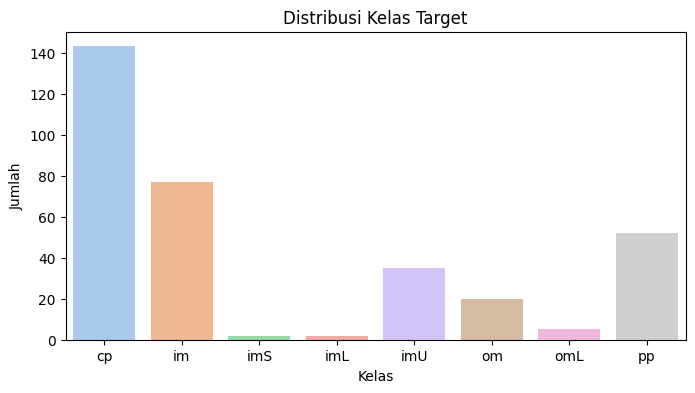
Balancing Dengan SMOTE#
from imblearn.over_sampling import SMOTE
import pandas as pd
import matplotlib.pyplot as plt
import seaborn as sns
print("=== DATA BALANCING DENGAN SMOTE ===")
# Data asli
original_dist = pd.Series(y).value_counts().sort_index()
print("Data asli:")
print(original_dist)
# SMOTE (k=1 aman untuk kelas minoritas sangat sedikit)
smote = SMOTE(random_state=42, k_neighbors=1)
X_smote, y_smote = smote.fit_resample(X_scaled, y)
# Setelah SMOTE → konversi y_smote ke Series agar bisa value_counts
y_smote_series = pd.Series(y_smote)
smote_dist = y_smote_series.value_counts().sort_index()
print("\nData setelah SMOTE:")
print(smote_dist)
print("\nRingkasan:")
print(f"• Data asli: {len(y)} sampel")
print(f"• Data setelah SMOTE: {len(y_smote)} sampel")
print(f"• Data yang di-generate: {len(y_smote) - len(y)} sampel")
print("Selesai!")
# ========================================
# VISUALISASI DISTRIBUSI KELAS (TERPISAH)
# ========================================
# 1. Distribusi Sebelum SMOTE
plt.figure(figsize=(8,5))
sns.barplot(x=original_dist.index, y=original_dist.values, palette="Blues")
plt.title("Distribusi Kelas Sebelum SMOTE")
plt.xlabel("Kelas")
plt.ylabel("Jumlah Sampel")
plt.show()
# 2. Distribusi Sesudah SMOTE
plt.figure(figsize=(8,5))
sns.barplot(x=smote_dist.index, y=smote_dist.values, palette="Greens")
plt.title("Distribusi Kelas Sesudah SMOTE")
plt.xlabel("Kelas")
plt.ylabel("Jumlah Sampel")
plt.show()
=== DATA BALANCING DENGAN SMOTE ===
Data asli:
location_class
cp 143
im 77
imL 2
imS 2
imU 35
om 20
omL 5
pp 52
Name: count, dtype: int64
Data setelah SMOTE:
location_class
cp 143
im 143
imL 143
imS 143
imU 143
om 143
omL 143
pp 143
Name: count, dtype: int64
Ringkasan:
• Data asli: 336 sampel
• Data setelah SMOTE: 1144 sampel
• Data yang di-generate: 808 sampel
Selesai!
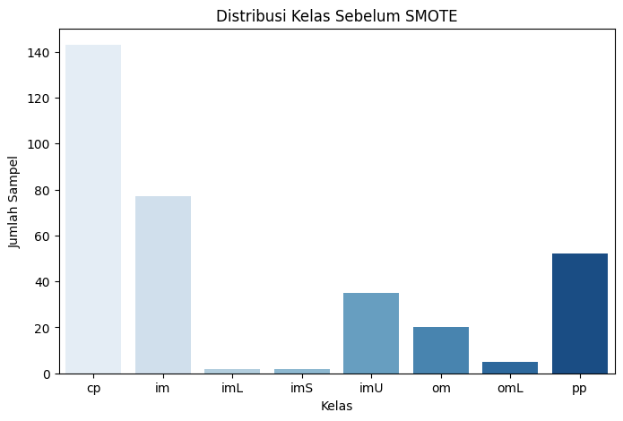
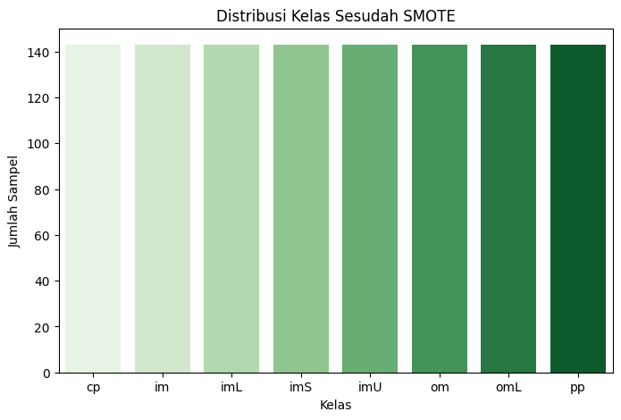
Klasifikasi Data Asli#
#Klasifikasi DATA ASLI (SEBELUM BALANCING)
print("=== KLASIFIKASI : DATA ASLI ===")
# Split data untuk training dan testing
X_train, X_test, y_train, y_test = train_test_split(
X_scaled, y, test_size=0.3, random_state=42, stratify=y
)
print(f"Training set: {X_train.shape[0]} samples")
print(f"Test set: {X_test.shape[0]} samples")
# Training Naive Bayes
nb_original = GaussianNB()
nb_original.fit(X_train, y_train)
y_pred_original = nb_original.predict(X_test)
# Evaluasi
acc_original = accuracy_score(y_test, y_pred_original)
print(f"\nAccuracy (Data Asli): {acc_original:.4f}")
print("\nClassification Report (Data Asli):")
print(classification_report(y_test, y_pred_original))
=== KLASIFIKASI : DATA ASLI ===
Training set: 235 samples
Test set: 101 samples
Accuracy (Data Asli): 0.7822
Classification Report (Data Asli):
precision recall f1-score support
cp 0.91 1.00 0.96 43
im 0.78 0.61 0.68 23
imL 0.00 0.00 0.00 1
imS 0.00 0.00 0.00 1
imU 0.62 0.50 0.56 10
om 0.00 0.00 0.00 6
omL 0.50 1.00 0.67 1
pp 0.62 1.00 0.76 16
accuracy 0.78 101
macro avg 0.43 0.51 0.45 101
weighted avg 0.73 0.78 0.74 101
Klasifikasi Dengan Naive Bayes, Random Forest Dan Bagging Classifier#
def train_evaluate(X, y, title="Dataset"):
from sklearn.naive_bayes import GaussianNB
from sklearn.ensemble import RandomForestClassifier, BaggingClassifier
from sklearn.metrics import classification_report, accuracy_score, confusion_matrix
import seaborn as sns
import matplotlib.pyplot as plt
print(f"\n=== KLASIFIKASI: {title} ===")
# Naive Bayes
nb = GaussianNB()
nb.fit(X, y)
y_pred_nb = nb.predict(X)
print("\n--- Naive Bayes ---")
print("Accuracy:", round(accuracy_score(y, y_pred_nb), 4))
print(classification_report(y, y_pred_nb))
plt.figure(figsize=(5,4))
sns.heatmap(confusion_matrix(y, y_pred_nb), annot=True, fmt="d", cmap="Blues")
plt.title(f"Confusion Matrix - Naive Bayes ({title})")
plt.show()
# Random Forest
rf = RandomForestClassifier(n_estimators=100, random_state=42)
rf.fit(X, y)
y_pred_rf = rf.predict(X)
print("\n--- Random Forest ---")
print("Accuracy:", round(accuracy_score(y, y_pred_rf), 4))
print(classification_report(y, y_pred_rf))
plt.figure(figsize=(5,4))
sns.heatmap(confusion_matrix(y, y_pred_rf), annot=True, fmt="d", cmap="Greens")
plt.title(f"Confusion Matrix - Random Forest ({title})")
plt.show()
# Bagging Classifier (Random Forest base)
bagging = BaggingClassifier(
estimator=RandomForestClassifier(n_estimators=50, random_state=42),
n_estimators=10,
random_state=42
)
bagging.fit(X, y)
y_pred_bagging = bagging.predict(X)
print("\n--- Bagging Classifier ---")
print("Accuracy:", round(accuracy_score(y, y_pred_bagging), 4))
print(classification_report(y, y_pred_bagging))
plt.figure(figsize=(5,4))
sns.heatmap(confusion_matrix(y, y_pred_bagging), annot=True, fmt="d", cmap="Reds")
plt.title(f"Confusion Matrix - Bagging ({title})")
plt.show()
Penampilan Data Asli#
# Data asli
train_evaluate(X_scaled, y_enc, title="Data Asli")
=== KLASIFIKASI: Data Asli ===
--- Naive Bayes ---
Accuracy: 0.7827
precision recall f1-score support
0 0.90 0.97 0.94 143
1 0.93 0.56 0.70 77
2 1.00 1.00 1.00 2
3 0.25 1.00 0.40 2
4 0.69 0.57 0.62 35
5 1.00 0.20 0.33 20
6 1.00 1.00 1.00 5
7 0.55 0.92 0.69 52
accuracy 0.78 336
macro avg 0.79 0.78 0.71 336
weighted avg 0.84 0.78 0.77 336
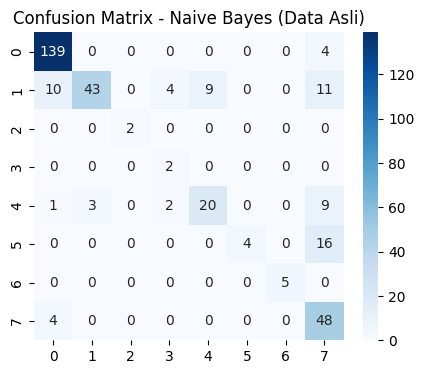
--- Random Forest ---
Accuracy: 1.0
precision recall f1-score support
0 1.00 1.00 1.00 143
1 1.00 1.00 1.00 77
2 1.00 1.00 1.00 2
3 1.00 1.00 1.00 2
4 1.00 1.00 1.00 35
5 1.00 1.00 1.00 20
6 1.00 1.00 1.00 5
7 1.00 1.00 1.00 52
accuracy 1.00 336
macro avg 1.00 1.00 1.00 336
weighted avg 1.00 1.00 1.00 336
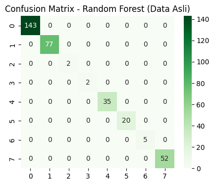
--- Bagging Classifier ---
Accuracy: 0.9762
precision recall f1-score support
0 0.98 0.99 0.99 143
1 0.97 0.99 0.98 77
2 1.00 1.00 1.00 2
3 1.00 0.50 0.67 2
4 1.00 0.94 0.97 35
5 1.00 0.95 0.97 20
6 1.00 1.00 1.00 5
7 0.94 0.96 0.95 52
accuracy 0.98 336
macro avg 0.99 0.92 0.94 336
weighted avg 0.98 0.98 0.98 336
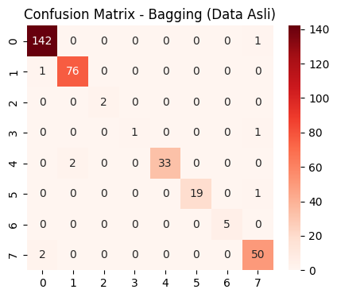
Penampilan Data Setelah SMOTE#
# Data SMOTE
train_evaluate(X_smote, y_smote, title="Data SMOTE")
=== KLASIFIKASI: Data SMOTE ===
--- Naive Bayes ---
Accuracy: 0.8392
precision recall f1-score support
cp 0.86 0.97 0.91 143
im 0.96 0.57 0.72 143
imL 1.00 1.00 1.00 143
imS 0.95 1.00 0.97 143
imU 0.82 0.84 0.83 143
om 1.00 0.38 0.55 143
omL 1.00 1.00 1.00 143
pp 0.53 0.95 0.68 143
accuracy 0.84 1144
macro avg 0.89 0.84 0.83 1144
weighted avg 0.89 0.84 0.83 1144
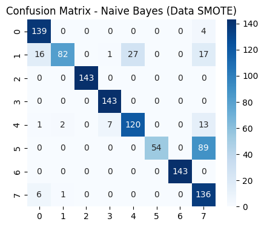
--- Random Forest ---
Accuracy: 1.0
precision recall f1-score support
cp 1.00 1.00 1.00 143
im 1.00 1.00 1.00 143
imL 1.00 1.00 1.00 143
imS 1.00 1.00 1.00 143
imU 1.00 1.00 1.00 143
om 1.00 1.00 1.00 143
omL 1.00 1.00 1.00 143
pp 1.00 1.00 1.00 143
accuracy 1.00 1144
macro avg 1.00 1.00 1.00 1144
weighted avg 1.00 1.00 1.00 1144
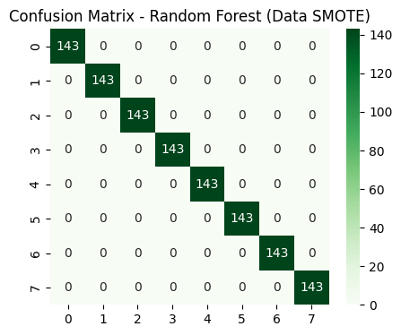
--- Bagging Classifier ---
Accuracy: 0.9921
precision recall f1-score support
cp 0.99 0.99 0.99 143
im 0.99 0.96 0.98 143
imL 1.00 1.00 1.00 143
imS 1.00 1.00 1.00 143
imU 0.97 0.99 0.98 143
om 1.00 0.99 1.00 143
omL 1.00 1.00 1.00 143
pp 0.99 1.00 0.99 143
accuracy 0.99 1144
macro avg 0.99 0.99 0.99 1144
weighted avg 0.99 0.99 0.99 1144
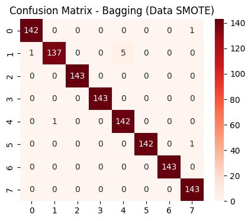
Perbandingan Performansi Model#
import matplotlib.pyplot as plt
import seaborn as sns
import pandas as pd
from sklearn.metrics import accuracy_score, f1_score
from sklearn.naive_bayes import GaussianNB
from sklearn.ensemble import RandomForestClassifier, BaggingClassifier
# ===============================
# Distribusi Kelas Sebelum & Sesudah SMOTE
# ===============================
original_dist = pd.Series(y).value_counts().sort_index()
smote_dist = pd.Series(y_smote).value_counts().sort_index()
dist_df = pd.DataFrame({
'Original': original_dist,
'SMOTE': smote_dist
}).fillna(0)
dist_df.plot(kind='bar', figsize=(10,6))
plt.title("Distribusi Kelas Sebelum & Sesudah SMOTE")
plt.xlabel("Kelas")
plt.ylabel("Jumlah Sampel")
plt.xticks(rotation=0)
plt.legend(title="Dataset")
plt.show()
# ===============================
# Perbandingan Performansi Model
# ===============================
def get_metrics(X, y):
metrics = {}
# Naive Bayes
nb = GaussianNB()
nb.fit(X, y)
y_pred = nb.predict(X)
metrics['Naive Bayes'] = {'accuracy': accuracy_score(y, y_pred),
'f1': f1_score(y, y_pred, average='weighted')}
# Random Forest
rf = RandomForestClassifier(n_estimators=100, random_state=42)
rf.fit(X, y)
y_pred = rf.predict(X)
metrics['Random Forest'] = {'accuracy': accuracy_score(y, y_pred),
'f1': f1_score(y, y_pred, average='weighted')}
# Bagging
bagging = BaggingClassifier(
estimator=RandomForestClassifier(n_estimators=50, random_state=42),
n_estimators=10,
random_state=42
)
bagging.fit(X, y)
y_pred = bagging.predict(X)
metrics['Bagging'] = {'accuracy': accuracy_score(y, y_pred),
'f1': f1_score(y, y_pred, average='weighted')}
return metrics
# Hitung metrics
results_asli = get_metrics(X_scaled, y_enc)
results_smote = get_metrics(X_smote, y_smote)
# Buat DataFrame untuk plotting
df_acc = pd.DataFrame({
'Data Asli': {model: results_asli[model]['accuracy'] for model in results_asli},
'Data SMOTE': {model: results_smote[model]['accuracy'] for model in results_smote}
})
df_f1 = pd.DataFrame({
'Data Asli': {model: results_asli[model]['f1'] for model in results_asli},
'Data SMOTE': {model: results_smote[model]['f1'] for model in results_smote}
})
# Plot Accuracy
df_acc.plot(kind='bar', figsize=(10,6))
plt.title("Perbandingan Accuracy per Model")
plt.ylabel("Accuracy")
plt.ylim(0,1)
plt.xticks(rotation=0)
plt.show()
# Plot F1-Score
df_f1.plot(kind='bar', figsize=(10,6), color=['skyblue','lightgreen'])
plt.title("Perbandingan F1-Score per Model")
plt.ylabel("F1-Score (weighted)")
plt.ylim(0,1)
plt.xticks(rotation=0)
plt.show()
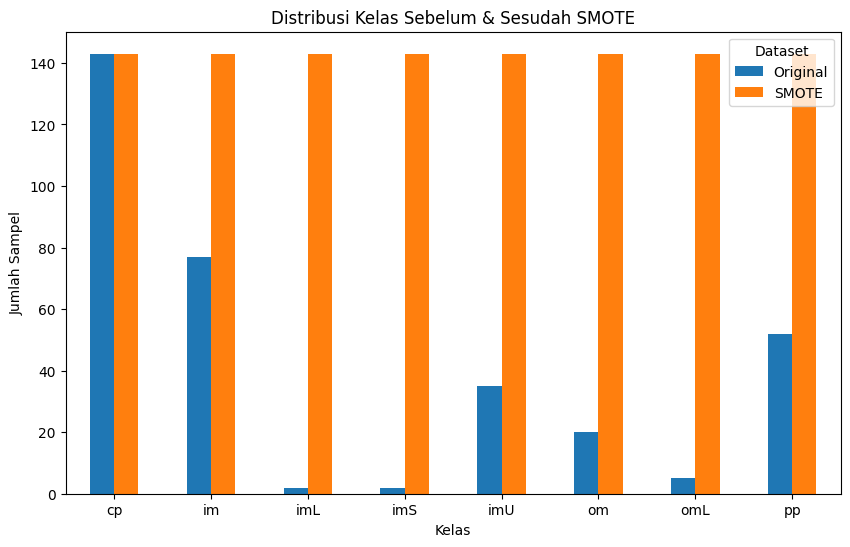
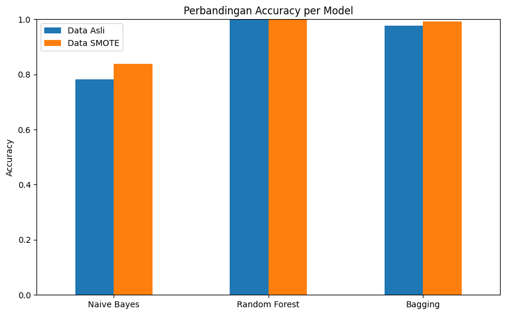
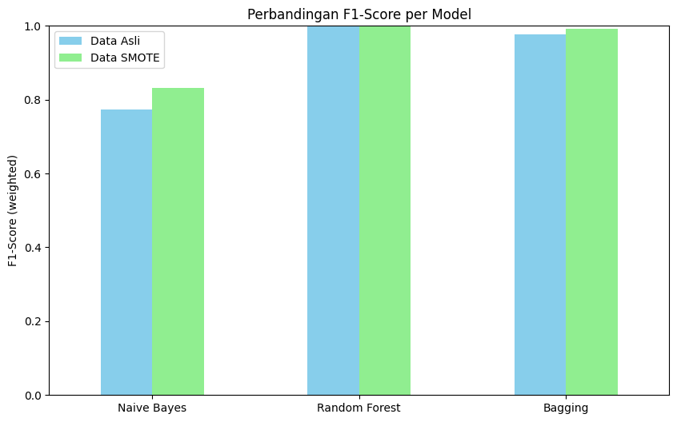